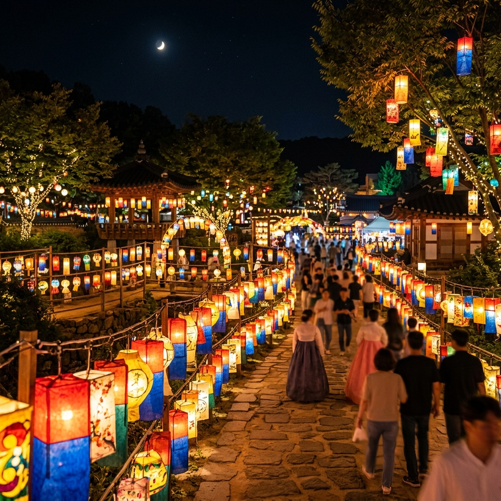
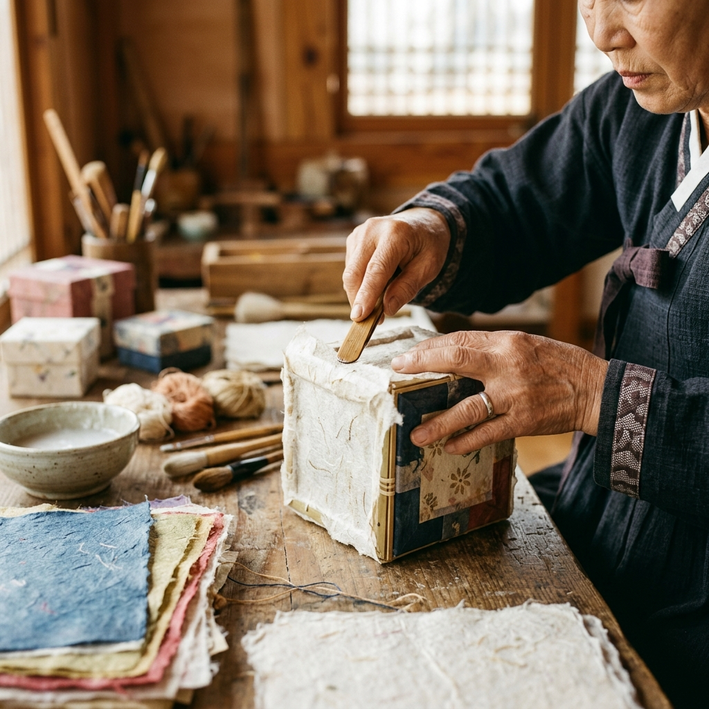
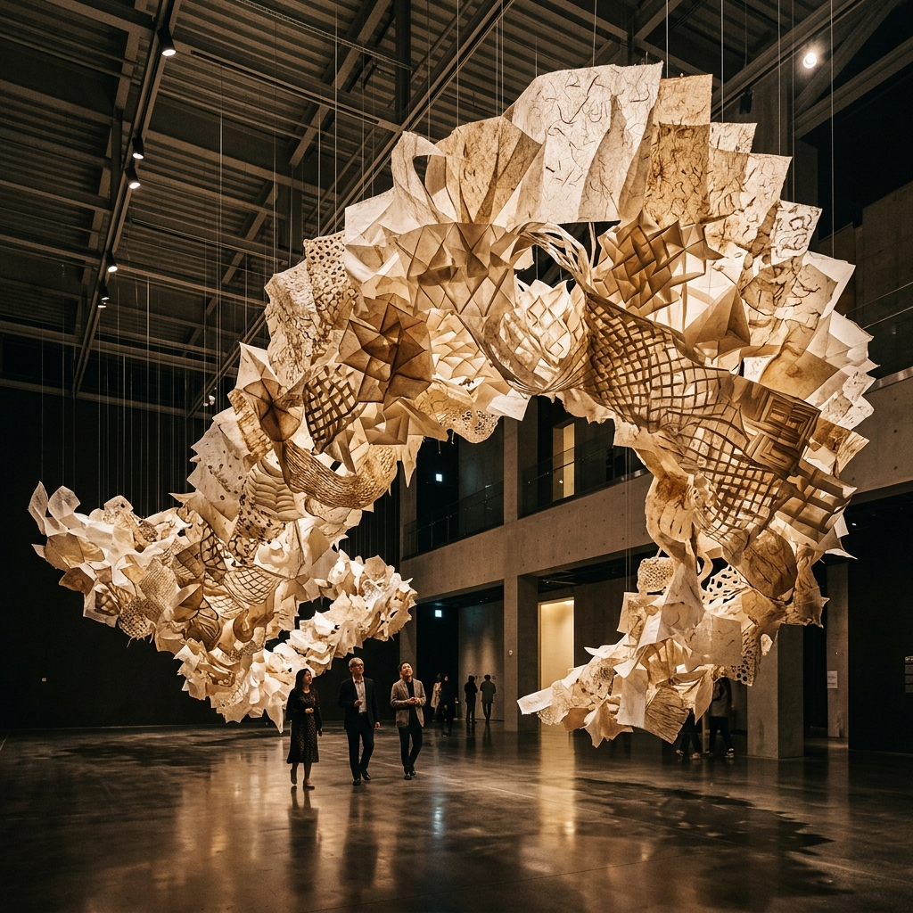

2026 원주 한지문화제 가이드: 빛과 종이가 빚어낸 천년의 환상
강원도 원주의 자부심이자 천년의 역사를 품은 '한지'를 테마로 한 제28회 원주 한지문화제가 개최됩니다. 은은한 달빛 아래 형형색색의 한지 등(燈)이 불을 밝히는 야간 점등식은 매년 수많은 관광객의 감탄을 자아내는데요. 이번 포스팅에서는 2026년 축제 일정, 야간 관람 포인트, 그리고 아이와 함께 즐기기 좋은 한지 체험 코스까지 에디터가 직접 선별한 핵심 정보를 전해드립니다.
1. 2026 원주 한지문화제 개최 개요 및 장소
올해 축제는 2026년 5월 중순(정확한 일정은 홈페이지 참조) 원주 한지테마파크 일원에서 성대하게 열립니다. 원주는 예로부터 닥나무 자생지가 많아 품질 좋은 한지의 본고장으로 불려왔는데요. 이러한 전통을 계승하고 현대적인 감각으로 재해석한 이번 문화제는 단순한 지역 축제를 넘어 세계적인 종이 예술 축제로 자리매김하고 있습니다.
원주 한지테마파크는 잘 가꾸어진 조경과 현대적인 전시 공간이 어우러져 평상시에도 산책하기 좋은 명소입니다. 축제 기간에는 공원 전체가 하나의 거대한 캔버스가 되어 한지로 만든 다양한 예술 작품들이 전시됩니다. 자연과 예술이 공존하는 공간에서 우리 종이의 우수성을 온몸으로 느껴보세요.

수천 개의 한지 등이 빚어낸 환상적인 빛의 정원 / AI 제작 이미지
2. 축제의 정점: 야간 점등식 '빛의 언덕'
한지문화제의 백미는 단연 야간 점등식입니다. 해가 저문 후 어두워진 공원에 수천 개의 한지 등이 동시에 불을 밝히는 순간은 그야말로 장관입니다. 한지의 부드러운 질감을 통과한 빛은 인위적인 조명과는 차원이 다른 따뜻하고 고즈넉한 분위기를 자아냅니다.
가장 인기 있는 구간은 '빛의 계단'과 '한지 숲'입니다. 아이들이 고사리손으로 직접 그린 그림이 담긴 등이 길게 늘어선 모습은 보는 이들에게 잔잔한 감동을 줍니다. 연인들에게는 더없이 로맨틱한 데이트 코스가, 가족들에게는 따뜻한 추억의 장소가 됩니다. 삼각대를 준비해 가시면 아름다운 야경 사진을 남기기에 좋습니다.
3. 아이와 함께 즐기는 '나만의 한지 만들기' 체험
축제장 곳곳에 마련된 체험 부스에서는 한지의 제작 과정을 직접 경험해 볼 수 있습니다. 특히 한지 뜨기 체험은 전통적인 방식 그대로 나무 틀을 이용해 종이를 만들어보는 과정으로, 아이들에게 교육적으로 매우 훌륭합니다.
직접 만든 한지 위에 꽃잎을 얹어 장식하거나, 한지로 필통, 보석함 등 생활 소품을 만드는 프로그램도 운영됩니다. 모든 체험은 전문 강사의 친절한 지도 아래 진행되므로 초보자도 쉽게 따라 할 수 있습니다. 세상에 단 하나뿐인 나만의 한지 굿즈를 만들어보는 특별한 시간을 가져보세요.

정성스러운 손길로 완성되어가는 전통 한지 공예품 / AI 제작 이미지
4. 국내외 작가들의 독창적인 '한지 현대미술전'
한지테마파크 내 기획전시실에서는 한지 현대미술 특별전이 함께 열립니다. 한지를 단순히 글을 쓰는 종이가 아닌, 입체적인 조각이나 설치 예술의 재료로 활용한 작품들은 관람객들의 고정관념을 깨뜨리기에 충분합니다.
섬세한 투영 효과를 극대화한 조형물부터 거대한 규모의 설치 작품까지, 한지의 무한한 가능성을 엿볼 수 있는 전시입니다. 도슨트 투어 시간을 미리 확인하여 방문하시면 작품 속에 담긴 심오한 의미까지 더 깊이 이해할 수 있습니다. 전시실 내부의 정숙한 분위기 속에서 예술적 영감을 채워보세요.
5. 원주 한지문화제 방문 주차 및 교통 안내
축제 기간 한지테마파크 내 주차장은 매우 혼잡하므로 인근의 임시 주차장을 이용하시는 것을 추천드립니다. 원주시청 주차장이나 인근 학교 운동장이 임시 주차장으로 개방되며, 주요 거점에서 축제장을 잇는 무료 셔틀버스가 20분 간격으로 운행됩니다.
대중교통을 이용하실 경우 원주역이나 원주종합버스터미널에서 시내버스를 통해 쉽게 접근하실 수 있습니다. 자차 이동 시에는 교통 안내 요원의 지시에 잘 따라주시고, 가급적 이른 오전에 도착하여 여유롭게 관람을 시작하시는 것이 현명한 방법입니다.
6. 현지인이 추천하는 원주 3대 미식 투어
축제를 즐긴 후에는 원주의 맛을 경험해 볼 차례입니다. 첫 번째 추천 메뉴는 원주 추어탕입니다. 원주식 추어탕은 미꾸라지를 통째로 혹은 갈아서 넣고 고추장을 풀어 얼큰하게 끓여내는 것이 특징으로, 깊은 국물 맛이 일품입니다.
두 번째는 강원도 옹심이 칼국수입니다. 감자의 쫄깃한 식감이 살아있는 옹심이와 담백한 육수의 조화는 여행의 피로를 씻어줍니다. 마지막으로 원주 중앙시장의 소고기 골목에서 맛보는 신선한 한우 구이도 놓칠 수 없는 미식 코스입니다.

한지의 질감을 활용한 세련된 현대 미술 작품 전시 / AI 제작 이미지
7. 원주 여행 연계 코스: 뮤지엄 산과 소금산 출렁다리
한지문화제와 함께 둘러보기 좋은 인근 명소로는 뮤지엄 산(SAN)이 있습니다. 건축가 안도 다다오가 설계한 이곳은 자연과 건축, 예술이 하나가 된 공간으로 이미 SNS에서 인생샷 명소로 유명합니다.
좀 더 역동적인 활동을 원하신다면 간현유원지의 소금산 출렁다리를 추천합니다. 아찔한 높이에서 내려다보는 원주의 비경은 가슴이 뻥 뚫리는 시원함을 선사합니다. 최근에는 잔도길과 울렁다리까지 연결되어 더욱 풍성한 트레킹 코스를 즐길 수 있습니다.
8. 한지 굿즈 쇼핑 가이드 및 방문 시 유의사항
축제장 내 기념품 판매소에서는 한지로 만든 세련된 인테리어 소품과 문구류를 구매할 수 있습니다. 한지 조명이나 천연 염색 한지 스카프 등은 선물용으로도 인기가 매우 높습니다. 시중보다 저렴한 가격에 고품질의 한지 제품을 득템할 수 있는 기회입니다.
전시실 내부에서는 작품을 만지지 않도록 주의해 주시고, 야외 관람 시에도 등을 훼손하지 않도록 배려하는 마음이 필요합니다. 또한 5월의 원주는 일교차가 크므로 여벌의 겉옷을 반드시 준비하시고, 야외 활동을 위한 편안한 운동화 착용을 권장합니다.
9. 에디터가 전하는 원주 한지문화제의 마지막 감동
원주 한지문화제는 단순히 보고 즐기는 축제를 넘어, 우리 선조들의 지혜가 담긴 소중한 자산인 '한지'의 가치를 재발견하는 시간입니다. 빛을 머금은 한지가 주는 따뜻한 위로와 손끝에서 느껴지는 종이의 질감을 통해 잊고 지냈던 아날로그적 감성을 깨워보세요.
이번 주말, 가족 혹은 연인과 함께 강원도 원주로 떠나 빛과 종이가 만드는 마법 같은 풍경 속 주인공이 되어보시는 건 어떨까요? 천 년을 견디는 한지처럼, 여러분의 마음속에도 오랫동안 변치 않을 소중한 추억이 새겨질 것입니다.
#원주한지문화제
#원주가볼만한곳
#5월축제
#강원도여행
#한지테마파크
#야간데이트코스
#한지체험
#아이와가볼만한곳
#원주맛집
#뮤지엄산